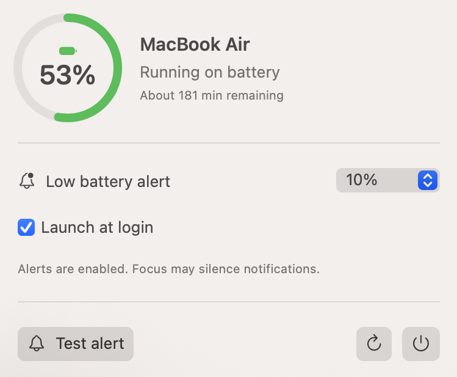

Better Battery Menu Bar
See your battery at a glance and choose when your Mac reminds you to plug in. Set an alert from 5% to 90%, with audible reminders every five minutes while the battery stays low and unplugged.
View on GitHub
See your battery at a glance and choose when your Mac reminds you to plug in. Set an alert from 5% to 90%, with audible reminders every five minutes while the battery stays low and unplugged.
View on GitHub